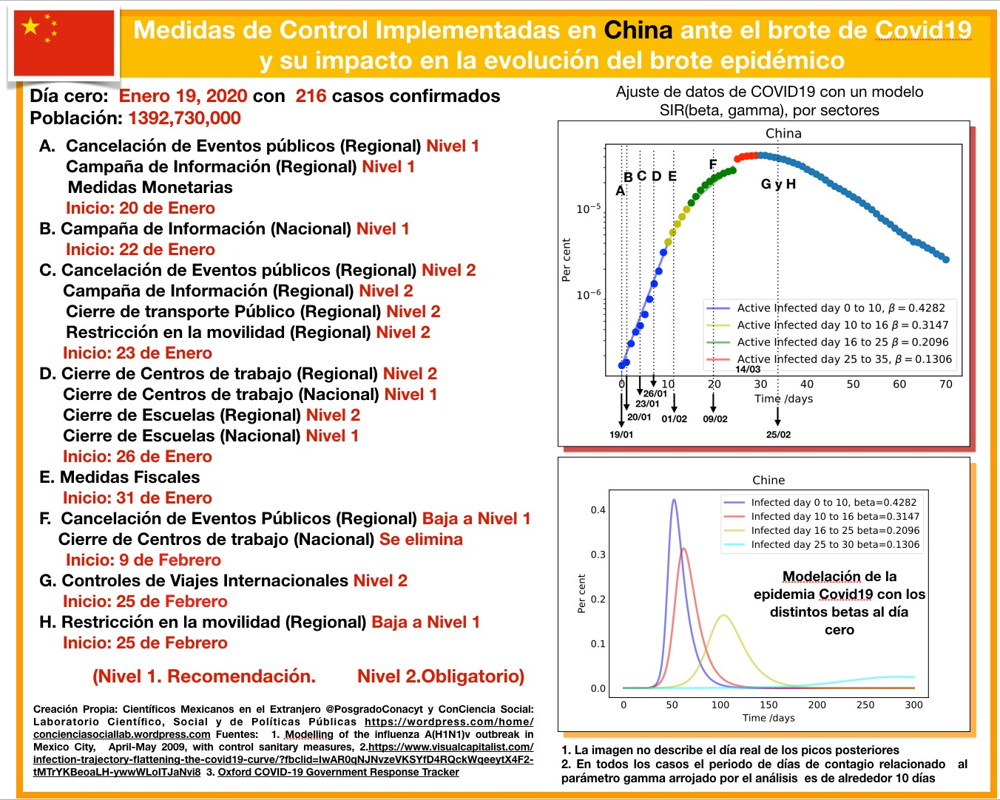
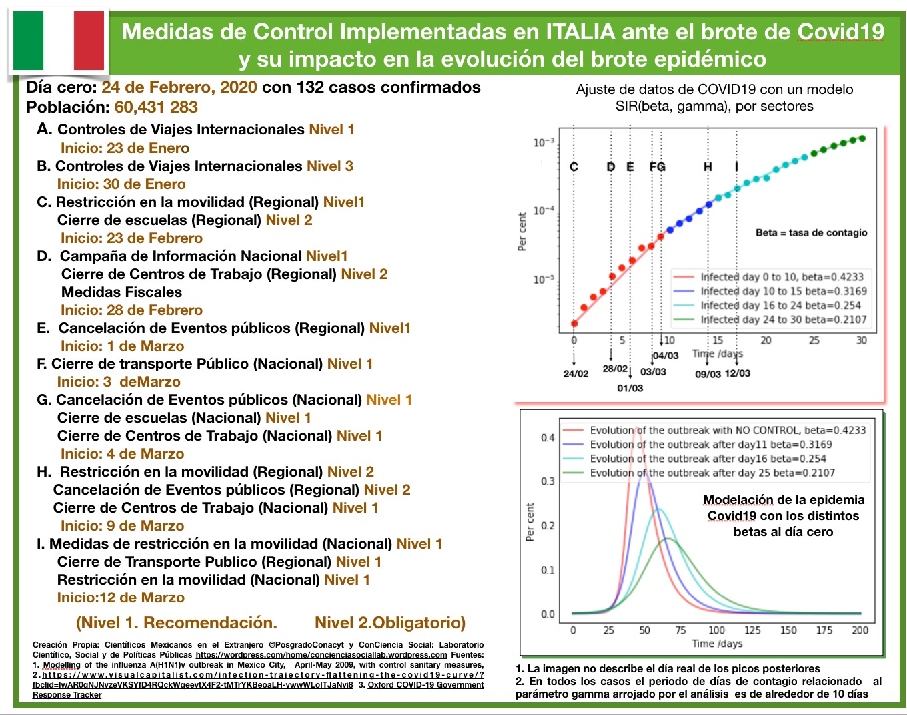
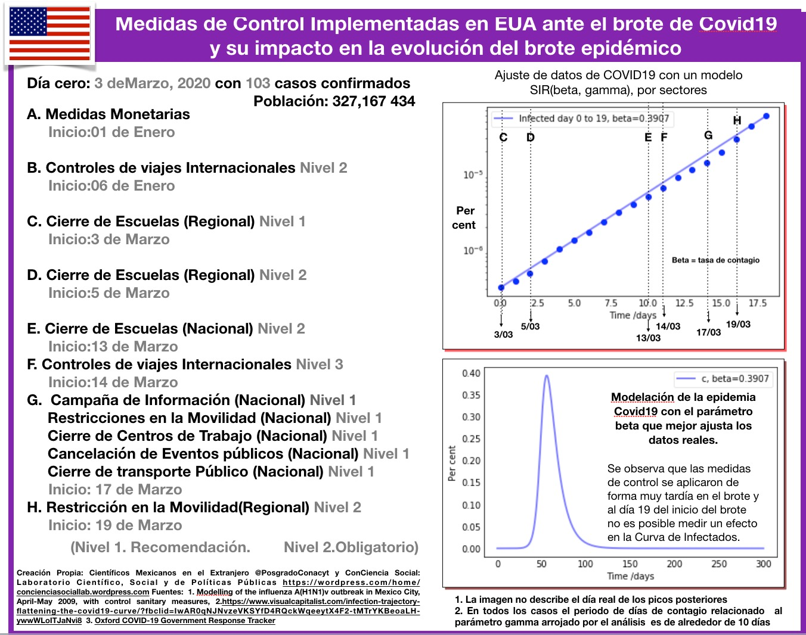
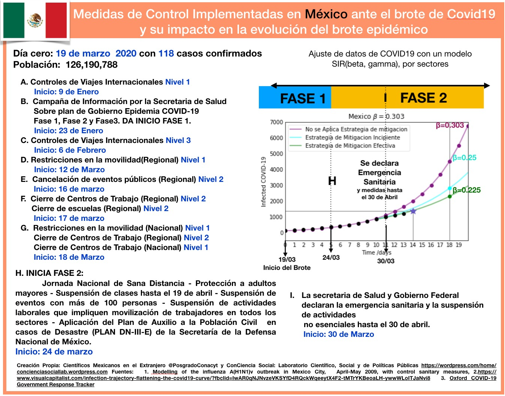
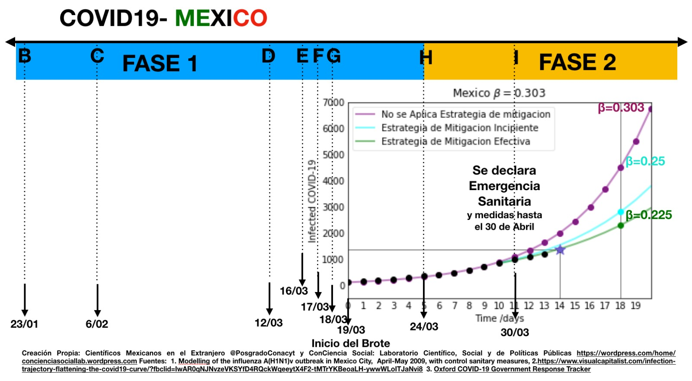

Presentación e intención
Esta es una iniciativa que busca ofrecer una herramienta confiable a la sociedad sobre el escenario de México frente a la Contingencia del COVID-19. Por medio de un modelo matemático y una metodología rigurosa, buscamos sumar esfuerzos a las iniciativas llevadas a cabo por el Gobierno de México a través de la Secretaría de Salud para poder transmitir a la población en general la relevancia de atender y seguir ejemplarmente las medidas de control establecidas con el objetivo de contener y mitigar el brote epidémico COVID-19 en el país. Resaltamos que nuestro único objetivo como científicos es ofrecer una herramienta más para contrarrestar la incertidumbre de la sociedad mexicana, lejos de partidismos o filiación política. Nuestro único compromiso y responsabilidad moral es con la sociedad mexicana a quien ofrecemos nuestro conocimiento vertido en el presente trabajo.
¿Quienes somos?
Somos dos grupos que trabajamos en colaboración uno es el colectivo Científicos Mexicanos en el extranjero y el otro es el Laboratorio ConCiencia social, somos un grupo multidisciplinario que nos encontramos en diferentes países, por supuesto México, varios países de Europa, como son España, Reino Unido, Portugal, Austria, Italia, Francia y además también hay gente en EU.
Contexto
Estamos viviendo una pandemia provocada por el virus COVID-19 cuyo primer brote se detectó en la provincia de Hubei en China, marcando el día cero de este brote por un nuevo coronavirus el día 19 de Enero de 2020 con 216 infectados. Desde ese día la infección por COVID-19 se ha manifestado a nivel internacional lo que ha ocasionado que al día de hoy se tengan registrado brotes de COVID-19 en 178 países cuya intensidad y evolución del brote epidémico ha variado de localidad en localidad como lo manifiestan las curvas de infectados que hoy fácilmente podemos consultar en la red de forma actualizada y confiable, además de múltiples bases de datos disponibles como por ejemplo una elaborada por la universidad de Oxford en donde se registran las medidas de control que los diversos países han implementado con fechas actualizadas.
Inquietud al observar los datos disponibles de infectados y las medidas de control implementadas
Hemos seguido de cerca y experimentado directamente las medidas de control que han sido implementadas en los diferentes países en donde nos encontramos estos son: Italia, España, Reino Unido, además de haber analizado el caso de China por tratarse el país cero de este brote y podemos percatarnos de los diferentes binomios (medidas de control, mitigación del brote) que han sido implementados con mayor o menor éxito en los distintos países. Lo cual nos llevó a cuestionarnos si era posible descifrar o medir de alguna manera el efecto que éstas medidas. El planteamiento que no hicimos fue si era posible implementar un modelo matemático y una metodología rigurosa que nos permitiera dar pautas a la sociedad mexicana en estos momentos y responder con base en parámetros medibles si estas medidas son eficientes o no. Resultando que nuestro modelo es capaz de responder un contundente Sí, las medidas de control diseñadas e implementadas en este momento y en este estadio de la epidemia si tuvieron y tendrán un efecto en el periodo de la evolución del brote epidémico.
Concretamente nuestros objetivos son:
- Mostrar el decrecimiento de la tasa de contagio efectiva medida en todos los países que se han analizado después de un periodo de haber aplicado las medidas de control sanitario;
- Mostrar que la efectividad de estas medidas depende tanto del orden y la temporalidad dentro de las etapas del brote, así como de la severidad con las que que fueron aplicadas y la duración de las mismas.
- Resaltar que una la elaboración de una estrategia adecuada a cada país para la implementa
Modelo
La base de este trabajo es un modelo clásico de 1927 ideado por los médicos escoceses W. O. Kermack y A. G. McKendrick, el cual emplea un sistema de ecuaciones diferenciales a fin de detallar cómo surge un brote infeccioso, su crecimiento, en qué momento alcanza su máximo y cómo después decae, todo ello a partir de dos parámetros: uno biológico \gamma y otro social \beta.
-
Gama: El parámetro biológico está relacionados con el número de días en que tarda un humano infectado en recuperarse y es contagioso.
-
Beta: El parámetro social considera cómo se transmite este virus y cómo puedes disminuir su contagio implementando medidas de control de diferente corte que ayuden a modificar y limitar la interacción, estas son de una gama muy grande y van desde las medidas que implican incluir hábitos higiénicos como el lavado de manos y el no tocarse la cara, la limpieza de superficies etc, la sana distancia entre las personas que debe mantenerse al relacionarnos. Hasta medidas más restrictivas y severas como es el auto-aislamiento, quedarse en casa, hacer home office, y luego en una etapa más avanzada de la epidemia al inicio del crecimiento acelerado de esta el cierre de centros de trabajo no esenciales y cuarentena prolongada. Y además las de corte monetario y fiscal que son muy necesarias en un brote que se espera de larga duración para proteger a la población más desprotegida (debemos recordar que México es un país que debe enfrentar la Contingencia Covid-19 en las condiciones adversas con el 50% de su población en la pobreza, no bancarizada y con un sistema de salud precario).
El modelo depende igualmente de la población total, y ciertos valores iniciales como son el número inicial de infectados al dia cero del brote. El modelo predice el número de personas infectadas y el número de recuperados a diferentes tiempos.
México es un buen referente en el tratamiento de brotes epidémicos y una prueba de ello fue la correcta y oportuna implementación de medidas de control para el brote H1N1 en Abril 2009 en donde México fue el país cero de un nuevo virus en donde el grupo de científicos y médicos a cargo en ese entonces de la contingencia adoptaron el modelo antes mencionado para modelar el brote epidémico del H1N1 en la ciudad de México y diseñar así una estrategia de mitigación del brote, la cual fue muy efectiva.
Metodología del Ajuste con intervalos variables
Para entender la metodología podemos imaginar un caso hipotético donde una epidemia empieza en un país y el gobierno no aplica ninguna medida de mitigación, entonces la epidemia seguirá su desarrollo natural determinado únicamente por beta y gama. Lo que podemos hacer en este caso es ajustar el modelo y medir o determinar el valor del parámetro beta que mejor ajusta los datos, un buen ajuste implicaría que nuestra predicción del modelo y observación son muy similares o idénticas.
Una vez que encontramos el modelo que mejor describe nuestras observaciones podemos evaluar cómo evolucionará la infección con el tiempo. Entonces, lo que ocurriría es que en un breve tiempo se afectaría un porcentaje importante de la población. Sabemos hoy que la tasa de enfermos que requieren hospitalización es aproximadamente 10% y la tasa de mortalidad es de 4-5%. Este caso ideal no toma en cuenta las condiciones del sistema de salud, entonces supone que sin importar el número de enfermos los hospitales podrán atenderlos. Si suponemos que el sistema de salud solo puede atender un número limitado de enfermos, entonces se habla de saturación del sistema de salud e incremento de la tasa de mortalidad. Por tanto el interés de los gobiernos por implementar medidas de mitigación para intentar reducir la tasa de contagio y por ende el número de pacientes que requerirán atención hospitalaria y de cuidados intensivos al mismo tiempo y de esta forma administrar los recurso de salud de manera óptima.
Un modelo estático no nos sirve para estudiar la evolución de la epidemia, dado que la mayoría de los países han implementado medidas de mitigación, entonces podemos esperar que la evolución tenga una tasa efectiva de contagio que varía en el tiempo y en particular esperamos que disminuya en el tiempo. Lo que hicimos fue ajustar el modelo variando el intervalo de tiempo del ajuste para poder identificar si las medidas han tenido impacto en la tasa de contagio efectiva. Realizamos este procedimiento por el número de intervalos de tiempo que nos indique nuestros datos.
Este análisis fue aplicado para 5 países: China, Italia, España, Reino Unido, Estados Unidos y México. Para poder asociar los cambios en la tasa de contagio con las medidas de mitigación realizamos una investigación de las fechas y medidas de mitigación implementadas, así como la efectividad y severidad de las medidas en los diferentes paises. En particular nos centramos en analizar el impacto en el parámetro beta, de las estrategias de mitigación seguidas en los diferentes países y esperamos que entre más efectivas las medidas, más baja sea la tasa de contagio.
Limitaciones del Modelo
El modelo no integra una dimensión espacial y considera que la propagación del brote es homogénea. Entonces en los casos donde una ciudad o unas cuantas ciudades tienen un brote de distinta intensidad y temporalidad, la interpretación del modelo será un promedio de los efectos de cada uno de los brotes en las ciudades, lo que llamamos tasa de contagio efectiva.
China

Análisis sobre el impacto de las medidas de control implementadas en CHINA para tratar de mitigar el brote epidémico. El brote epidémico en China fue detectado y declarado el 19 de enero con 216 casos confirmados. Debido a que el brote se encontraba ya en una fase de crecimiento acelerado, se implementaron medidas de control muy severas a nivel regional en toda la provincia de Hubei.
Las medidas adoptadas a nivel regional permitió mitigar la intensidad del brote inicial. Particularmente, al día 10 de iniciada la epidemia se observa un pequeño decrecimiento en la tasa de contagio. Las medidas de control no se relajaron durante los próximos 30 días. Este efecto de las medidas puede apreciarse en que los valores de beta decrecen conforme pasa el tiempo y que el efecto de “aplanamiento” se observa en los escenarios evolutivos de la epidemia por el modelo SIR. Observamos que la aplicación contundente y efectiva de las diferentes medidas de control en la región del brote (y algunas otras preventivas a nivel nacional) ayudaron a concentrar y frenar el brote epidémico, y por ello no fue necesario extender estas mismas medidas a nivel nacional.
China implementó una estrategia efectiva para mitigar el brote de COVID19 y mantenerlo en la región de Hubei por un tiempo prolongado, suficiente para que no fuera propagado en el resto del país, donde el balance final de defunciones a la fecha es de 3,316.
Italia

Italia fue el primer país en presentar un brote de gran intensidad en Europa, brote que lamentablemente a la fecha sigue su curso costando muchas vidas en su población y un golpe terrible a los trabajadores de la salud en donde su capacidad hospitalaria y de atención fue rebasada en la fase de crecimiento acelerado del brote. Italia detectó el inicio del brote el dia 24 de Febrero con 132 casos confirmados en su mayoría localizados en la Región de Lombardía. No fueron aplicadas mayores medidas de control para contener o mitigar el brote previamente a excepción de controles de viajes Internacionales de corte severo al dia 30 de enero, tampoco hubo campaña de información previa. Se observa que las medidas de control comienzan a ser implementadas el día 4 de marzo, 8 días después del día declarado como el inicio de la epidemia en la fase de crecimiento rápido de la epidemia y no son de corte severas en la región del brote sino más bien son de carácter relajado y gradual, por tanto podemos esperar que el impacto de las medidas sea mucho menor que en China. Los resultados verifican la intuición y encontramos que la tasa de contacto que podemos extraer de los datos en distintos periodos del brote ha decrecido más lentamente por ende el brote está teniendo una duración más larga en comparación con China y también se han registrado un mayor número de muertes, siendo el 19 de marzo el día en que lamentablemente Italia superó el número de defunciones por Covid19 que hasta el momento había reportado china esto ocurre a los 19 días del inicio del brote en Italia. El caso de Italia es importante pues es el primer país en describir una evolución a un escenario muy difícil en donde se supera el punto de la capacidad del sistema de salud, esto es la saturación de los sistemas de salud que igualmente aumentan la tasa de mortalidad y a la fecha Italia ha presentado 12 428 muertes. Por el momento no hemos incluido análisis de esta componente del fenómeno pero es algo que potencialmente integraremos al análisis.
España

Análisis sobre el impacto de las medidas de control implementadas en ESPAÑA para tratar de mitigar el brote epidémico. España detectó el brote epidémico el 3 de marzo con 114 infectados. La única medida de control, anterior a la fecha del brote, fue una campaña de información con poca difusión por parte del gobierno y de su sistema de salud.
España tomó medidas drásticas hasta 10 de marzo cuando se registraron 4,231 infectados y la epidemia ya estaba en un crecimiento acelerado. El impacto de estas medidas puede observarse en la curva de infectados, en el gráfico se observa que del 13 de marzo y 19 de marzo el parámetro beta de tasa de contacto efectiva ha disminuido de 0.42 a 0.25.
El 26 de marzo, España superó a CHINA en el número de defunciones por COVID19. Esto es a los 20 DÍAS del inicio del brote.
Estados Unidos

Con respecto a Estados Unidos , lo que observamos del análisis es que no se ha observado disminución de la tasa de contagio a los 21 días de haber iniciado el brote. Lo que indica que las medidas de control se aplicaron de manera muy tardía en el brote y no han tenido ningún efecto en la tasa de contacto. El país se encuentra en un momento de crecimiento acelerado del número de infectados y la ausencia de medidas severas homogéneas o coherentes a lo largo del país para la contención de la epidemia parecen apuntar a que la tasa de contacto no tendrá cambios significativos en las semanas próximas. Caracteristicas de estados Unidos que deben tomarse en cuenta al realizar el análisis es su gran conectividad, su población relativamente grande, y la ausencia de medidas coherentes a lo largo del país de contención de la epidemia, que se han presentado múltiples brotes en el país, sobre todo en toda la costa este y en California lo cual no permite que podamos asumir una evolución homogénea por lo que pensamos hacer en el futuro análisis regionales.
México
 
En México en contraste con el resto de países que hemos analizado hasta el momento como son China, Italia, España, Uk, Estados Unidos, demuestra haber preparado una estrategia con suficiente antelación ante la llegada de un brote de COVID-19 al país. Todas las medidas implementadas en la Fase 1 de la epidemia con suficiente antelación al inicio del brote repercutieron positivamente para lograr mitigar la intensidad del brote esto, de acuerdo al los datos arrojados por el estudio lo podemos identificar en que el ajuste del parámetro de contacto efectivo es de beta=0.31 al inicio del brote, el cual es mucho menor al beta=0.42 reportado en las mediciones en China Italia y España. Al dia 9-10 empieza a vislumbrarse una inflexión en la curva a un estado de menor crecimiento y su evolución responderá al impacto del correcto comportamiento de la ciudadanía y gobierno para acatar las medidas impuestas en fase 2.
Con la evolución a un mayor número de días será posible medir el impacto de las medidas implementadas por la secretaría de salud y gobierno del día 24 de marzo con el inicio de la fase 2 y el dia 30 de marzo con el cierre de centros de trabajo no esenciales. Se puede esperar que si la ciudadanía sigue las recomendaciones la tasa de contacto será mucho menor a 0.303 de no relajarse las medidas y aplicarse por el tiempo estimado por la secretaría de salud y gobierno.
Consideramos que México ha diseñado una estrategia y se ha anticipado adecuadamente a la llegada del brote, iniciando una fuerte campaña de información 8 semanas previas al inicio del mismo. Se han difundido oportunamente recomendaciones sanitarias que incluyen medidas de higiene y de la jornada de sana distancia para disminuir la transmisión del virus. Además, las medidas más severas de limitación de la movilidad han sido aplicadas oportunamente en la fase previa al inicio del crecimiento acelerado del brote, también ya en la fase de crecimiento acelerado se han anunciado nuevas medidas que incluyen el cierre de centros de trabajo no esenciales hasta el 30 de abril. Podemos esperar que si no se relajan estas medidas y son adoptadas por la mayoría de los habitantes del país se logre reducir sustancialmente la tasa de contagio efectiva en las próximas semanas. Esta semana será clave para valorar el impacto de las medidas pero los resultados preliminares parecen prometedores. En la figura mostramos dos proyecciones en 2 escenarios diferentes un escenario donde se tiene una mitigación efectiva que seguiría la trayectoria de países como China y un escenario menos prometedor donde la tasa de contagio decrece como Italia. Estas predicciones también las iremos actualizando.